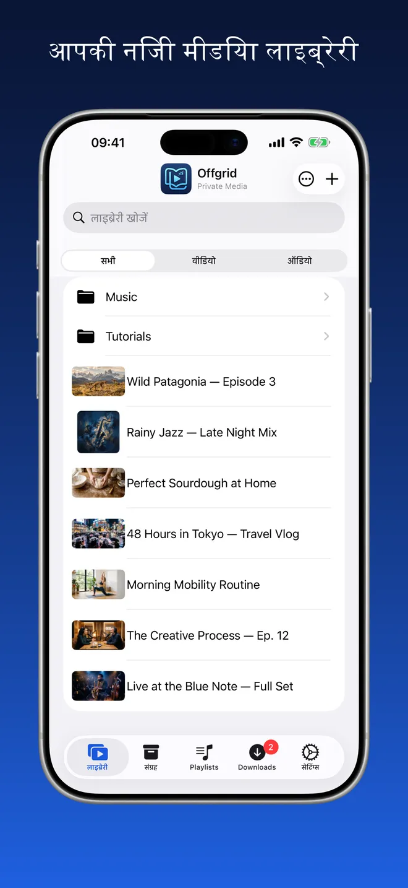
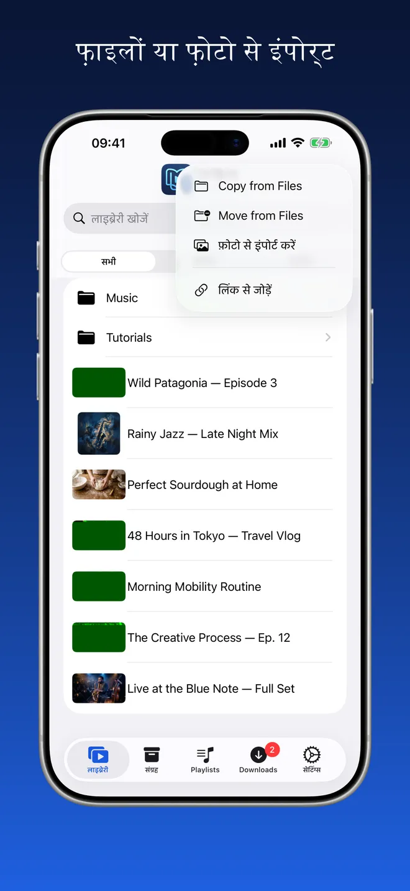
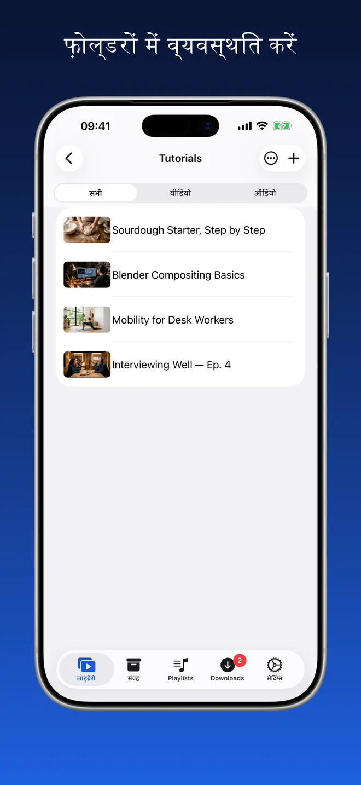
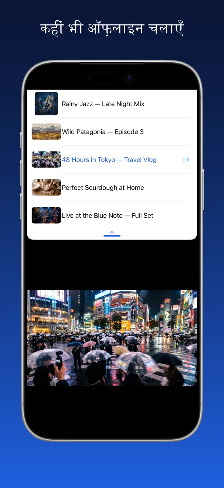
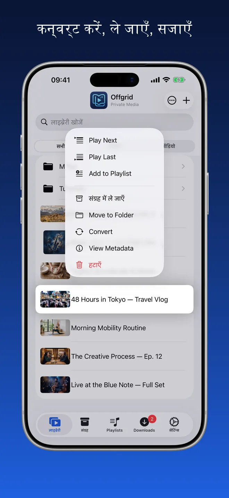
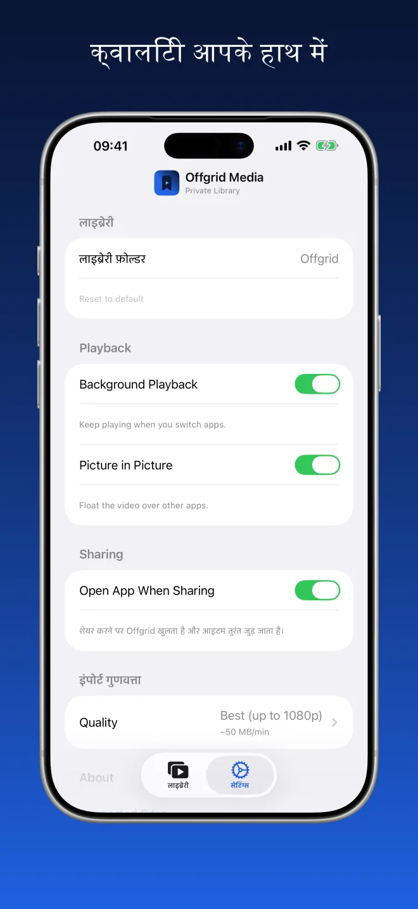

Offgrid Media · निजी लाइब्रेरी
जो आप रखते हैं,
सब ऑफ़लाइन।
जो वीडियो और ऑडियो आपके पास पहले से हैं उन्हें यहाँ लाइए — फ़ाइलों से, फ़ोटो से, या ऐसे लिंक से जिसे रखने का आपको अधिकार है — और सब कुछ एक ही व्यवस्थित जगह पर ऑफ़लाइन चलाइए।
आज़माकर देखिए। नेटवर्क बंद है — फिर भी आपकी लाइब्रेरी चल रही है।

आपके अपने मीडिया के लिए एक व्यवस्थित जगह
फ़ोल्डर, खोज और वीडियो या ऑडियो का फ़िल्टर। थंबनेल फ़ाइल से ही बनते हैं, कवर आर्ट और मेटाडेटा सुरक्षित रहते हैं।





इंपोर्ट करें, व्यवस्थित करें, चलाएँ
फ़ाइलों या फ़ोटो से इंपोर्ट
फ़ोल्डरों में व्यवस्थित करें
कहीं भी ऑफ़लाइन चलाएँ
एक असली प्लेयर, महज़ फ़ाइलों का फ़ोल्डर नहीं
नीचे दी गई हर चीज़ नेटवर्क बंद होने पर भी काम करती है।
फ़ाइलों और फ़ोटो से इंपोर्ट
iCloud Drive से, अपने डिवाइस से या अपनी फ़ोटो लाइब्रेरी से वीडियो और ऑडियो जोड़ें। सब कुछ आपकी लाइब्रेरी में आ जाता है, चलाने के लिए तैयार।
अपने तरीके से व्यवस्थित करें
फ़ोल्डर बनाएँ, आइटम इधर-उधर ले जाएँ और अपनी पूरी लाइब्रेरी में खोजें। ध्यान लगाना हो तो वीडियो या ऑडियो के अनुसार फ़िल्टर करें।
ऑफ़लाइन के लिए बना
जो एक बार आपकी लाइब्रेरी में आ गया, वह आपके डिवाइस पर रहता है। कोई बफ़रिंग नहीं, कनेक्शन की ज़रूरत नहीं, कहीं से कुछ भी स्ट्रीम नहीं होता।
एक असली प्लेयर
क्रम से या शफ़ल में चलाएँ, जहाँ छोड़ा था वहीं से जारी रखें, अगली चीज़ें कतार में लगाएँ, और दूसरे ऐप इस्तेमाल करते हुए पिक्चर इन पिक्चर में देखते रहें। कवर आर्ट और मेटाडेटा सुरक्षित रहते हैं।
बैकग्राउंड ऑडियो
ऐप बदलें या स्क्रीन लॉक करें — सुनना जारी रहेगा।
अपनी क्वालिटी चुनें
सेटिंग्स में एक बार अपनी पसंदीदा क्वालिटी सेट करें — सर्वोत्तम उपलब्ध, 720p, 480p, 360p या केवल ऑडियो।
चैप्टर
जिन मीडिया में चैप्टर हैं, उनके लिए लाइब्रेरी में चैप्टर सूची और प्लेयर के नीचे चैप्टर पट्टी मिलती है — सीधे उस हिस्से पर जाएँ जो आपको चाहिए।
पूरे फ़ोल्डर, एक ही बार में
फ़ोल्डर इंपोर्ट करें और वह अपने सबफ़ोल्डर के साथ वैसा ही आता है — कॉपी करें, या मूल जगह से मूव करें। एक साथ कई आइटम चुनें और उन्हें प्लेलिस्ट में जोड़ें, आर्काइव करें, मूव करें या हटाएँ।
बस वही जो आप इस्तेमाल करते हैं
सेटिंग्स में आर्काइव या प्लेलिस्ट बंद करें और वे ऐप से हट जाती हैं। कुछ भी मिटता नहीं — दोबारा चालू करें और सब कुछ वहीं मौजूद रहता है।
कोई खाता नहीं। कोई विज्ञापन नहीं। कोई ट्रैकिंग नहीं।
Offgrid सब कुछ आपके डिवाइस पर ही रखता है। कुछ भी अपलोड नहीं होता, कुछ भी साझा नहीं होता, और किसी खाते की ज़रूरत नहीं।
इकट्ठा करने को कुछ नहीं, क्योंकि भेजने की जगह ही नहीं
Offgrid Media का न कोई खाता है, न अपना कोई सर्वर। इसका App Store प्राइवेसी मैनिफ़ेस्ट बताता है: कोई ट्रैकिंग नहीं और कोई डेटा इकट्ठा नहीं।
अक्सर पूछे जाने वाले सवाल
नहीं। जो एक बार लाइब्रेरी में आ गया, वह आपके डिवाइस पर रहता है और नेटवर्क बंद होने पर भी चलता है। चलाते समय कुछ भी स्ट्रीम नहीं होता, इसलिए न बफ़रिंग है और न ही कोई कनेक्शन टूटने का डर।
आपके डिवाइस पर एक फ़ोल्डर में, ऐप के अपने स्टोरेज के भीतर। सेटिंग्स में आप दूसरा लाइब्रेरी फ़ोल्डर चुन सकते हैं, और चूँकि ऐप iOS की फ़ाइल्स ऐप के साथ काम करता है, वही फ़ाइलें आप वहाँ भी देख सकते हैं। कुछ भी अपलोड नहीं होता और कोई क्लाउड सिंक नहीं है।
फ़ाइल्स से इंपोर्ट करें (iCloud Drive या डिवाइस), अपनी फ़ोटो लाइब्रेरी से इंपोर्ट करें, या ऐसे लिंक से जोड़ें जिसे रखने का आपको अधिकार है — उसे ऐप में पेस्ट करें, या अपने ब्राउज़र में शेयर मेनू से Offgrid Media चुनें। इंपोर्ट मुख्य रास्ता है; लिंक से जोड़ना एक अतिरिक्त सुविधा भर है।
हाँ। सेटिंग्स में बैकग्राउंड ऑडियो चालू करें, फिर ऐप बदलने या स्क्रीन लॉक करने पर भी प्लेबैक चलता रहता है — लॉक स्क्रीन और कंट्रोल सेंटर में शीर्षक, कवर और कंट्रोल के साथ। वीडियो पिक्चर इन पिक्चर में दूसरे ऐप के ऊपर तैर सकता है। वीडियो फ़ुल स्क्रीन में भी चलता है, और iPad पर ऐप Split View में दूसरे ऐप के साथ चलता रहता है।
नहीं। Offgrid Media में न खाता है, न सर्वर, न एनालिटिक्स, न कोई थर्ड-पार्टी SDK। इसका App Store प्राइवेसी मैनिफ़ेस्ट बताता है: कोई ट्रैकिंग नहीं और कोई डेटा इकट्ठा नहीं। सिर्फ़ नोटिफ़िकेशन की अनुमति माँगी जाती है।
कुछ नहीं। कोई सब्सक्रिप्शन नहीं, कोई इन-ऐप ख़रीद नहीं, कोई विज्ञापन नहीं।
कृपया केवल वही सामग्री जोड़ें जिसे रखने का आपको अधिकार है। किसी भी प्लेटफ़ॉर्म की सेवा शर्तों और लागू कानूनों का पालन पूरी तरह आपकी ज़िम्मेदारी है।
आपकी लाइब्रेरी। आपका डिवाइस। सिग्नल की ज़रूरत नहीं।
Offgrid Media मुफ़्त है, iPhone और iPad के लिए, 11 भाषाओं में।